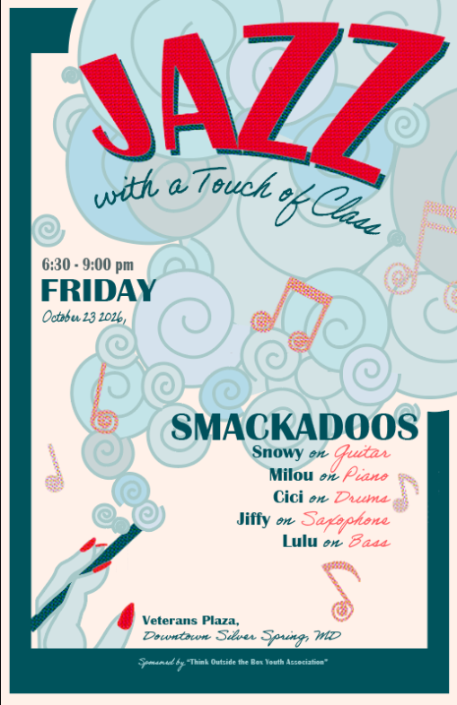
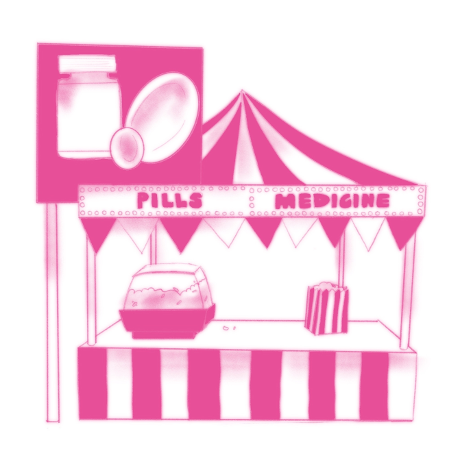
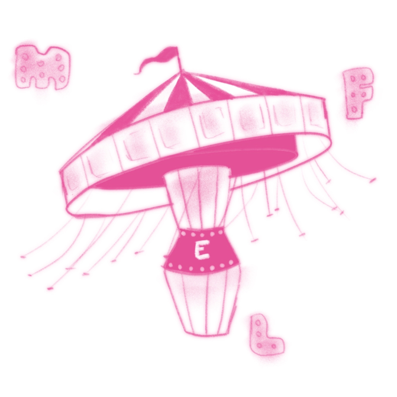
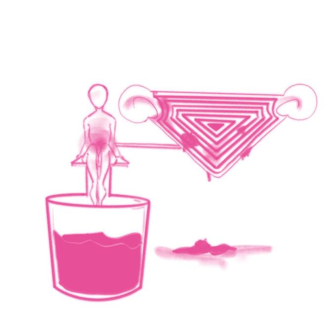
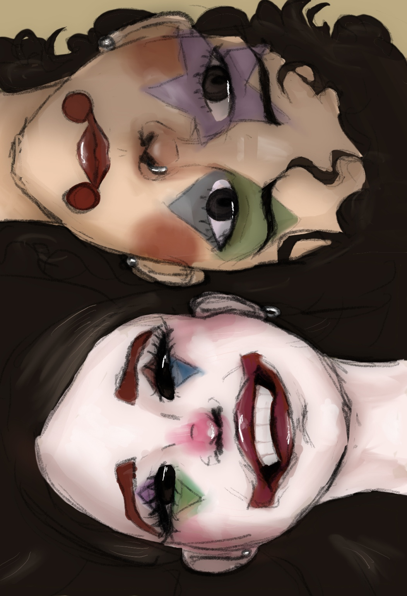
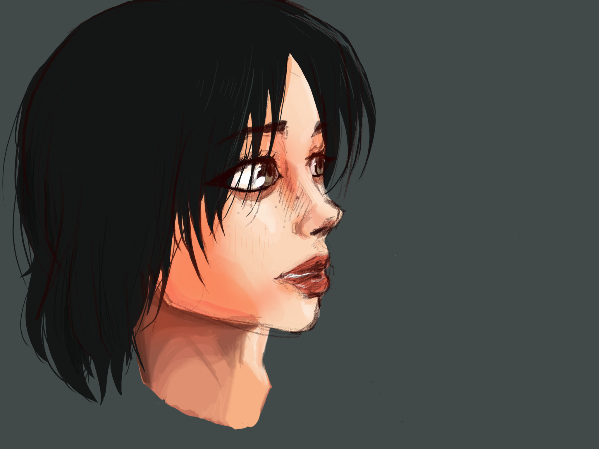
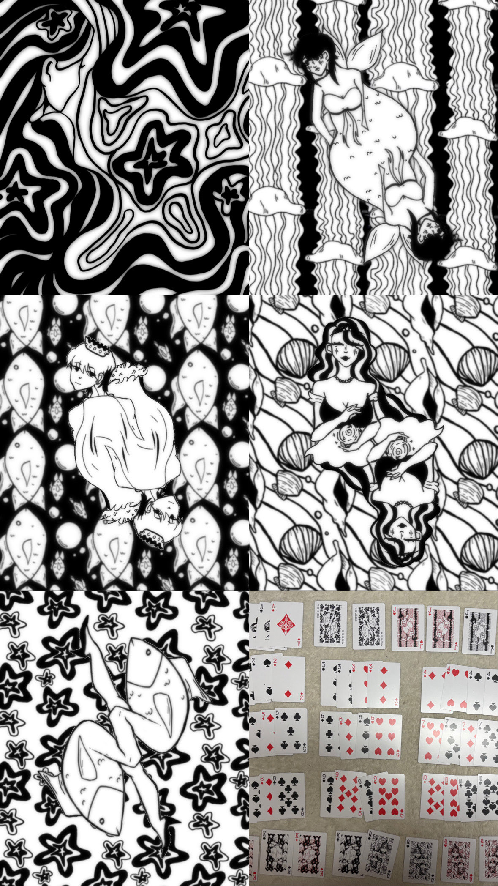
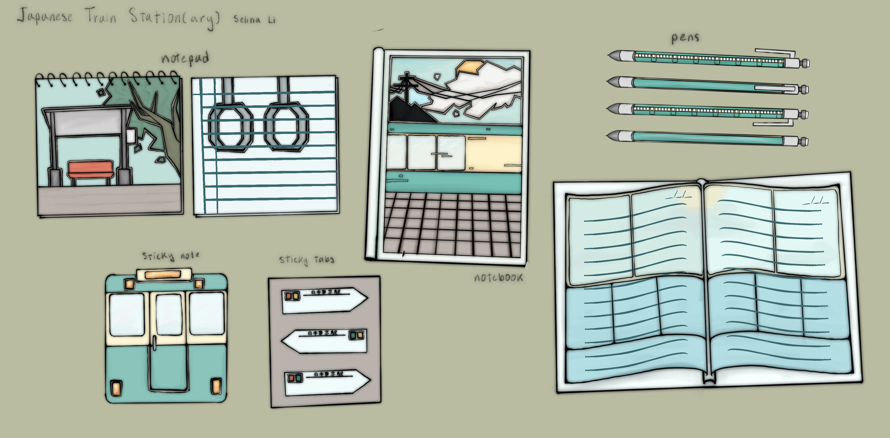

OCEAN LANDSCAPE COLLAGE
JANUARY 2026
This is a class project, made in Photoshop with a collage of pictures of UMD campus. Also the background I use for the entire site!


JAZZ POSTER
FEBRUARY 2026
This is a class project, made in Illustrator for an imaginary jazz concert.
"Changing the Cycle: How Individual Experiences During the Menstrual Cycle are Shaped"
NOVEMBER 2025
View PublicationThis is graphics for the Grey Matter's newsletter in the Fall 2025 chapter. Created informative and engaging artwork emphasizing the realities of the menstrual cycle while highlighting femininity and strength, with a fun circus theme.




CLOWN DREAMS
FEBRUARY 2025
This is a personal digital art piece inspired by the Tiktok "For the last time" trend.
DESPAIR GIRL
FEBRUARY 2025
This is a personal digital art piece I created to practice coloring and shading techniques.




SEA ILLUSION PLAYING CARDS
March 2025
These are playing cards I designed for a class project. The theme of the deck is "sea illusion," and each card features a unique design inspired by the ocean and its mysteries. I used a combination of digital art techniques to create the intricate patterns, with just black and white that bring the cards to life.
JAPANESE TRAIN STATIONARY
May 2025
These are stationery pieces I created for a class project. The design is inspired by traditional Japanese train aesthetics, featuring calming and formal elements that reflect the cultural heritage of Japan.
